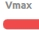

IV. User Interface and Interaction
1. Select Gripper IP

Figure 1: Gripper IP Selection Area
Under the “Change” option in the current Gripper IP Selection Area, you can select all gripper IPs within the local area network to connect to grippers with different IPs.
Sensor Status Indication
 : Indicates the device is online
: Indicates the device is online
 : Indicates the device is offline
: Indicates the device is offline
 : Indicates a sensor error. Hovering the mouse over it will display the error message (sensor config file reading failed).
: Indicates a sensor error. Hovering the mouse over it will display the error message (sensor config file reading failed).
After unplugging/plugging in the gripper, click  to rescan and reconnect to the sensor.
to rescan and reconnect to the sensor.
Tactile Information Display

Figure 2: Tactile Information Display
The gripper sensor can detect tactile sensations and generate corresponding images. It can also display multi-dimensional force data in real time, facilitating accurate monitoring and control of the gripper’s status and force-bearing conditions.
When the tactile image information is distorted or sensor data is stuck, click the  (Calibration Button) directly below under no-load conditions to recalibrate the sensor and refresh the display.
(Calibration Button) directly below under no-load conditions to recalibrate the sensor and refresh the display.
2. Gripper Sensor Configuration Area

Figure 3: Gripper Configuration Area
Move to Target Position: Click to move the sensor to the target position
{kind=link}
 Set Maximum Sensor Speed: Adjusts the movement speed of the sensor
{kind=link}
 Set Maximum Sensor Contact Force: Adjusts the contact force between the sensor and the object
Set Maximum Sensor Contact Force: Adjusts the contact force between the sensor and the object
 Set Gripper Status Light Color: Click the color button to set the color of the status light
Set Gripper Status Light Color: Click the color button to set the color of the status light
3. Toolbar

Figure 4: Toolbar
 Settings: Theme appearance and language type in the settings interface
Settings: Theme appearance and language type in the settings interface
 Help: Opens help documentation and FAQ (Frequently Asked Questions)
Help: Opens help documentation and FAQ (Frequently Asked Questions)
 About: Displays application information
About: Displays application information
 Minimize: Minimizes the application to the background
Minimize: Minimizes the application to the background
 Maximize: Maximize the application to occupy the entire screen
Maximize: Maximize the application to occupy the entire screen
 Exit: Closes the current application
Exit: Closes the current application